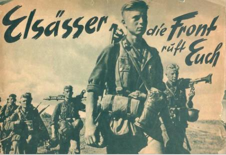

A consequence of the defeat of France in the Franco-Prussian War of 1870 was the creation of the territory known as Alsace-Lorraine. The Treaty of Frankfurt dictated the terms of France’s defeat: large reparations, the dissolution of the Second Empire, and the concession of Alsace and north eastern Lorraine to Prussia. While this new boundary satisfied many political and military aims of Prussia, the annexation was not painless as the people of the territory maintained strong pro French sentiments. Within France, an obsession over the humiliating defeat inspired powerful sentiments of desire to restore to France the ‘lost provinces’ of Alsace and Lorraine. The Treaty of Versailles returned Alsace-Lorraine to France where it remained for the interwar years.
In June of 1940, the capitulation of France left Alsace-Lorraine to the mercy of Nazi Germany. Under the pretext of uniting the people of Alsace-Lorraine with the rest of Germany, the region was annexed directly, unlike the rest of France which was partitioned into Vichy France and the Occupied Zone. As one element of a broad and oppressive effort to Germanize the region, young men from Alsace-Lorraine were incorporated by force into the Wehrmacht and the Waffen-SS. Between 1942 and 1945, more than 130,000 men from Alsace and Lorraine were incorporated into the German military. Most perceptions of the Malgre-Nous and their experience center around the Eastern Front and especially on the Tambov prisoner of war camp where many were held. This web project seeks to lay the foundations for a more complete view of the experience of the Malgre-Nous by using maps and visualizations to demonstrate that the Malgre-Nous were active on every front. Linking personal memoirs with the locations of death provide a reference point for the feelings of the Malgre-nous in their efforts to understand their sense of place and identity amidst the many landscapes of World War II.
Donec et dignissim nunc, sed vulputate urna. Nunc sed purus nisi. Curabitur quis egestas augue. Quisque bibendum nibh quis dui mattis consequat. Mauris mollis laoreet ligula sed tristique. Proin eget nulla orci. Etiam aliquet urna nunc, non congue augue vehicula aliquet. Curabitur a quam eu felis congue sagittis id at dui. Curabitur egestas eget metus ut faucibus. Proin sit amet cursus erat. Aliquam vehicula tellus dui, in lacinia purus cursus vel. Nam pharetra ante id ligula mattis, ultricies pellentesque libero pulvinar. Orci varius natoque penatibus et magnis dis parturient montes, nascetur ridiculus mus. Mauris nec semper purus. Sed porttitor et est quis congue. Sed placerat nec ante vitae egestas.
Integer sit amet justo id tortor vulputate porttitor non eu metus. Aliquam aliquam felis sit amet orci malesuada pharetra. Praesent maximus quis diam eget fermentum. Vivamus eleifend augue tristique turpis sollicitudin, porta sodales tortor molestie. Nunc pellentesque ipsum et dui scelerisque condimentum. Nam vel quam volutpat diam dictum feugiat non nec neque. Ut at malesuada ex, et dignissim ante. Nulla accumsan sem tellus, eget gravida tellus commodo congue. Integer augue nisl, pretium a fringilla ac, consequat non dolor. Etiam porta magna ut hendrerit sollicitudin. Ut sagittis elit sapien, vel feugiat nisl commodo consectetur.
...
...
...
...
...